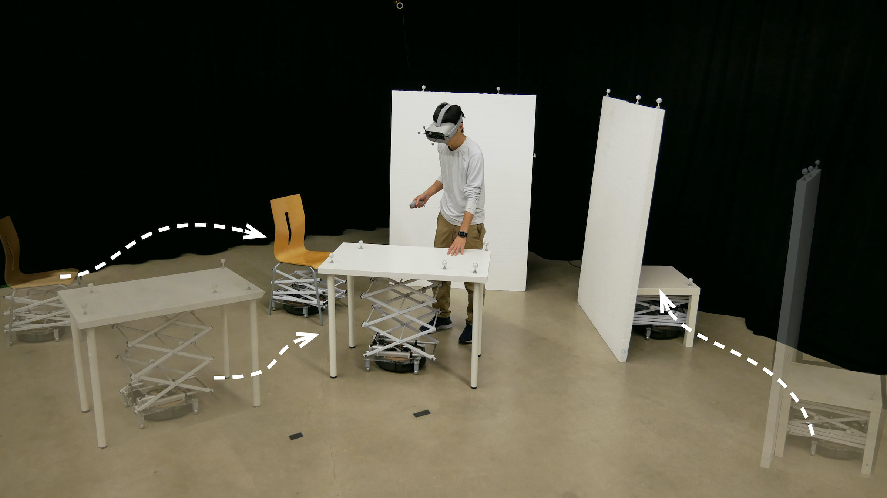

Draw on the world
A sketch can stay attached to an object as it moves.
RealitySketch · Research prototypeWe invent interfaces that make the physical world a medium for thought and creation.
Selected research
A sketch can stay attached to an object as it moves.
RealitySketch · Research prototype
A person demonstrates what a physical control should do.
Teachable Reality · Research prototype
Mobile robots change a room’s physical layout.
RoomShift · Research prototype